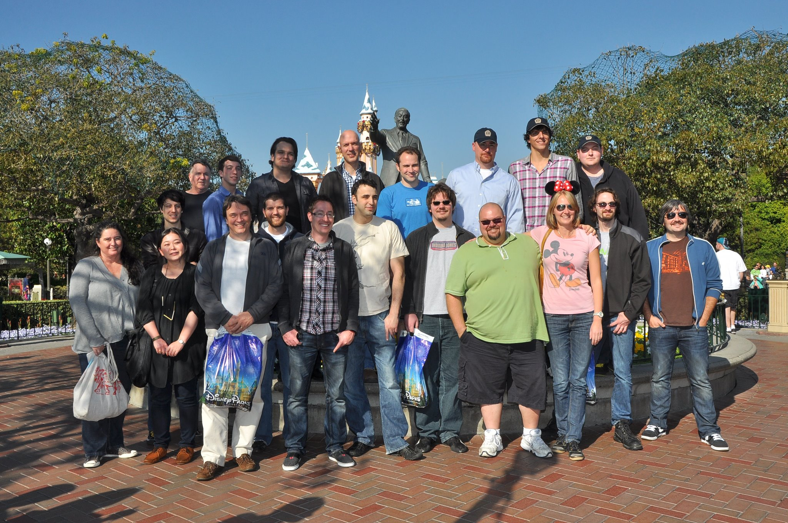
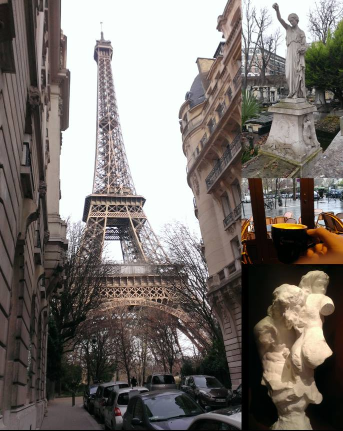

Lewey Geselowitz's Portfolio
My goals are quite simple:


Contact: Email, Facebook or LinkedIn
Passions: 3D interfaces, Sculpture, Software, Kinesthetics, Gesture Design, and Physical Interaction, coordinating systems, combination of all these to produce ergonomically contextual interactive software visualization (and ultimately grapes).
Professional Products: Power Map for Excel, Microsoft HoloLens (pre-production), Zoo Tycoon, Kinect Star Wars, Kinect Disneyland, Kinectimals, Kinect itself, Forza Motorsport 2, HyperChem 8, Windows Vista (and involvement in many others).
Favorite Number: 20 centimeters per hour - the rate that water flows through a grape vine (see General Viticulture).
Moments Caught in Motion:
~early 2015: I'm currently working on Office's Data Visualization eXperience team, trying to start the 3D revolution.
~early 2014: I'm currently the graphics lead on Power Map for Excel (a data visualization and mapping feature in Microsoft Excel), a team which I joined to focus on 3d data interaction after working on the interaction mechanics for the HoloLens during early production.
~early 2009: I'm currently working on the Kinect/NUI Publishing Team (Kinectimals, Kinect Disneyland, Kinect Star Wars, etc.) as part of Microsoft Studios. The web resume is up to date as of 1/1/2012. For more information, see the retroactive news items on the
main page .
~late 2007: I've had two internships at Microsoft (both as an SDE); first working on internal performance tools for the Windows Presentation Foundation in Windows Vista (then called Avalon for Windows Codename Longhorn), and second working on the shader pipeline for an Xbox 360 title. Recently I accepted a full-time position with the Microsoft Game Studios Tools and Technology team and should be starting sometime later this year. I also used to be the lead programmer for the HyperChem molecular modeling suite for HyperCube, Inc. here in Gainesville. Currently I'm mostly working on personal projects and am a research assistant for Dr. Jorg Peters.
~early 2004: Originally from South Africa, I'm now living in the U.S. and finishing up a Computer Science degree at the University of Florida. My main interests are computer graphics (preferably real-time), games, programming languages, user interfaces, philosophy, art theory, and of course my girlfriend.
This site is mostly a collection of the large and little products, ideas and prototypes I've worked on over the years, learning and growing as a creator of software in the midst of the medium's early dynamic and fascinating evolution.
-Lewey Geselowitz
|
Posing for the Microsoft Platform Next (HoloLens/Kinect) team photo day:
| |
At the Kinect Star Wars launch... 
| |
With the Kinect Disneyland Adventures team...  | |
Visiting Paris while staying with Microsoft Research Cambridge...  |